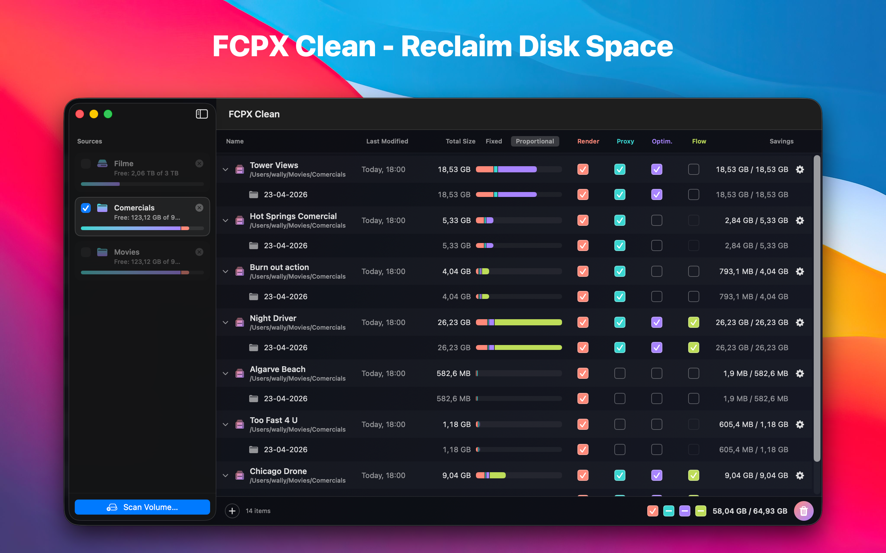
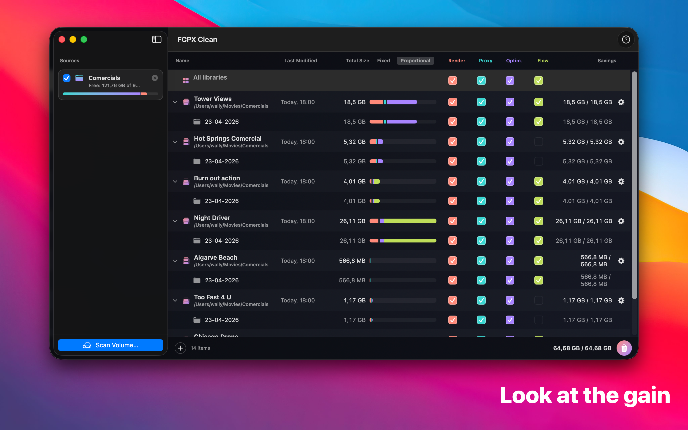
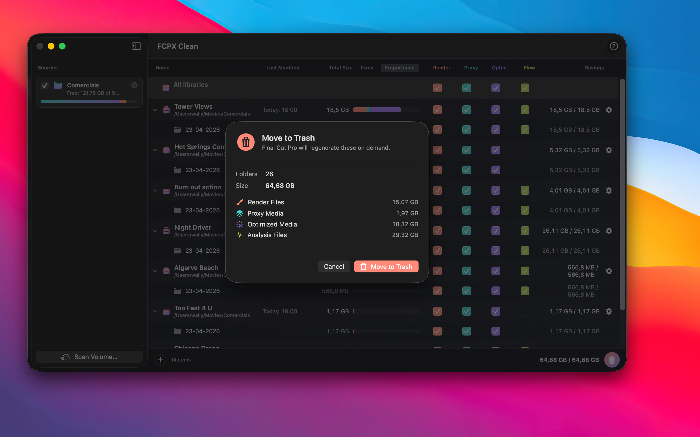

Four cache types Final Cut Pro will regenerate on demand.
Every event inside every .fcpbundle gets its reclaimable size broken down by category. You pick which types to sweep per library, per event, or across every source at once.
Every gigabyte accounted for.
A flat table of Final Cut Pro libraries with a color-coded stacked bar per row, tri-state checkboxes per category, and a master row at the top that sweeps every library at once. Move what you pick to the Trash and the library re-scans itself.



Not a generic disk cleaner. A specialist.
FCPX Clean reads the exact folder layout Final Cut Pro uses inside every .fcpbundle. It knows which folders are regeneratable and which contain your camera footage — and refuses to touch the latter.
Trash, never permanent
Every selected folder goes through FileManager.trashItem. Change your mind, restore from the Trash. Empty it when you're sure.
Original Media is untouchable
Folders named Original Media are displayed for visibility but can never be selected. A precondition in the cleaner refuses to trash them even if the UI were bypassed.
Proportional bars
Each library's bar is scaled to the largest one in the scan. At a glance you see where the gigabytes actually live.
Per-event selection
Tri-state checkboxes roll up from events to libraries to the whole scan. Sweep one category across every library with one click.
No account. No telemetry.
Runs entirely on your Mac. Nothing leaves your machine.
Scan any volume — internal, external, or network-mounted.
Point FCPX Clean at a drive, a folder, or a network share and it walks the tree for every .fcpbundle package. Each library appears as a row in the main table with its own per-category breakdown. Large scans are async so the UI stays responsive.
Two lanes. No ambiguity.
Every folder inside a scanned library is classified before you see it. Caches are selectable and colored. Original Media shows up but is locked — the UI will not let you remove it.
Scan. Review. Trash.
No preset cleanup recipes, no profiles, no auto-mode. You stay in control of every byte that leaves your drive.
Scan a volume
Pick a drive or folder. FCPX Clean walks the tree for every .fcpbundle and reads each library's events to size every category — internal, external, or mounted network shares.
Review & select
Each library becomes an expandable row. Four category checkboxes per row, per event, and across the whole scan. A proportional bar shows where the biggest wins are. Toggle Fixed vs Proportional to compare across libraries.
Move to Trash
A confirmation sheet shows total folders, total size, and the category breakdown. Confirm and FCPX Clean moves everything to the Trash, re-scans the libraries, and updates the numbers.
Runs on modern Macs.
Questions, bug reports, feature ideas?
Email me directly. I read everything and usually reply within a day.
walter.tengler@gmail.comDisclaimer. FCPX Clean moves selected folders to the macOS Trash — never permanent deletion — and every cleanup requires your explicit confirmation. Folders named Original Media cannot be selected in the UI and are refused by a safety guard in the cleaner. However, no software is guaranteed bug-free, and Final Cut Pro's library layout can change in future updates. Always maintain your own backups of important projects. FCPX Clean is provided as is without warranty of any kind; the author accepts no liability for any data loss, loss of work, or other damages resulting from use of this software. Full terms in the imprint.